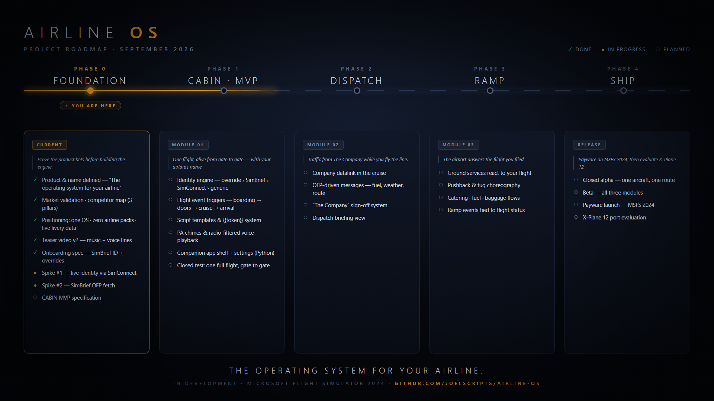
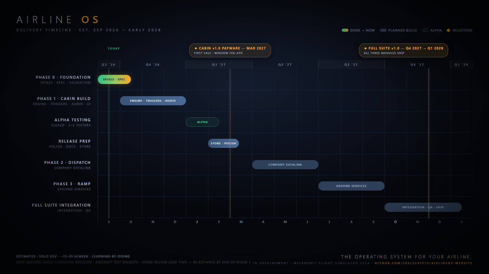

An airline life layer for MSFS 2024 — a cabin that talks, a company that dispatches, and a ramp that responds. Built around the airline you already fly: no packs, no codes, your livery read live from the sim.
Every existing tool does one thing in isolation. Airline OS is the layer that ties the whole operation together — from gate to gate.
Crew, passengers and announcements alive from gate to gate — spoken with your airline's name and your flight number. First module shipping.
MVP IN BUILDCompany traffic in the cruise — fuel, weather and route from your SimBrief flight plan, signed off by The Company.
PLANNED · Q2 2027Ground services that respond to the flight you actually filed — pushback, catering and baggage choreographed around your schedule.
PLANNED · Q3 2027No airline content packs. Ever. Identity flows through a resolution chain — from you, to your flight plan, to the sim itself:
Built in the open — the same roadmap we plan against, updated as phases close.


Development notes, milestones and honest progress — published as it happens.
Every feasibility question answered: live identity, ATC write-back, a real SimBrief OFP, and the first cabin trigger fired — plus what broke along the way.
Why we're building an airline life layer, what "no airline packs" really means, and where the first release stands today.
Payware release for Microsoft Flight Simulator 2024 — estimated March 2027 for the first module (Cabin). Store links go live here closer to launch; the devlog is where we'll announce it first.